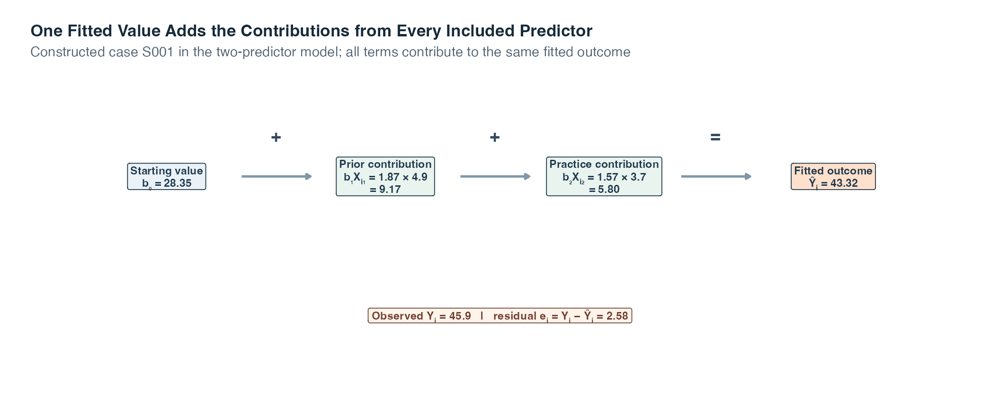
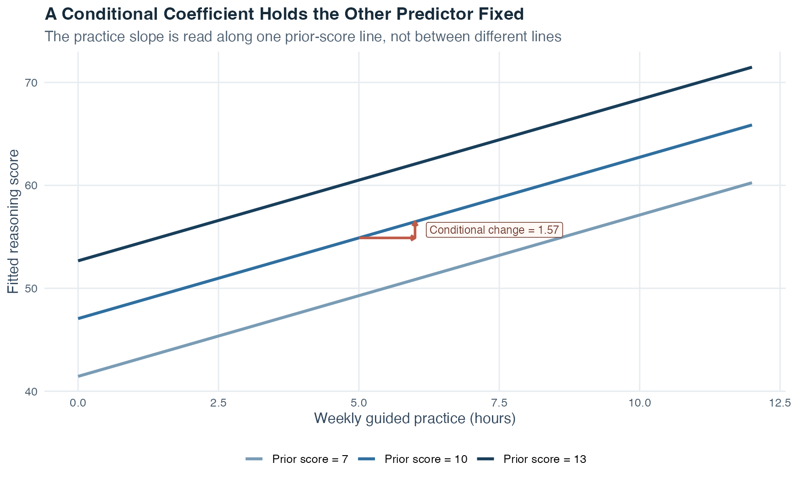
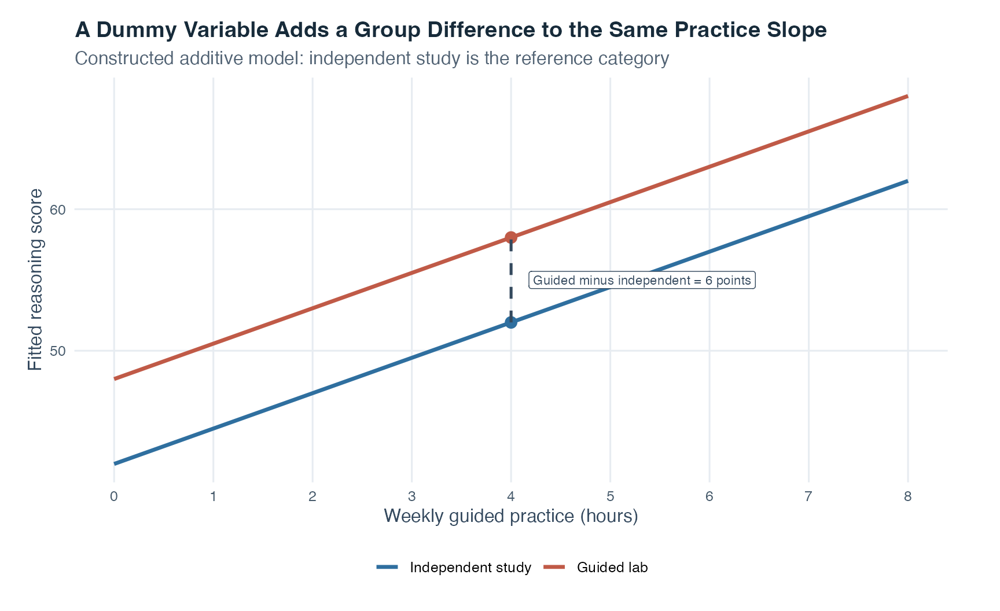
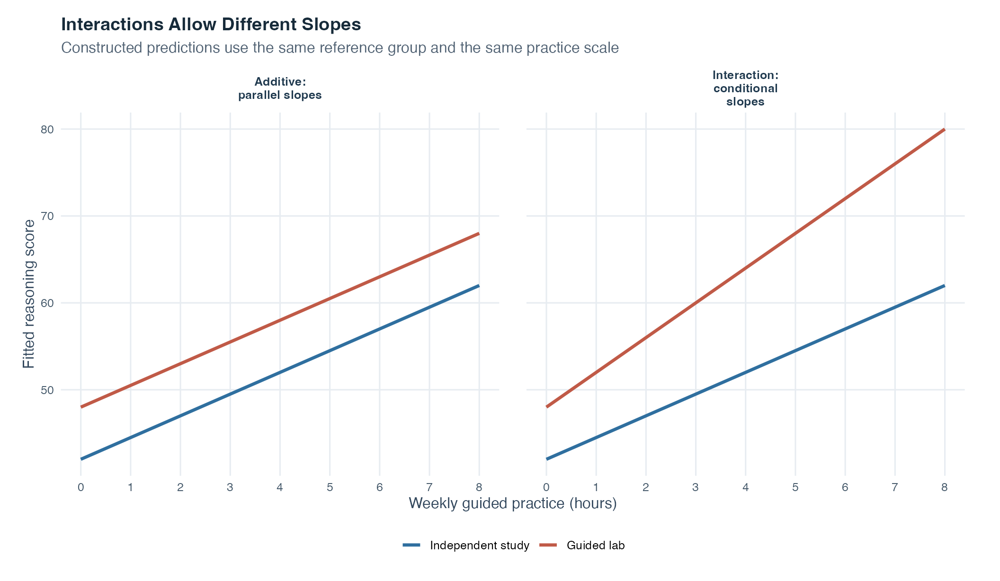

Exercise Sheet
Choose PDF for printing or Word for editing.
Introduction to Statistics · Topic 7
Topic 5 used one predictor to fit a straight line. Topic 6 showed why an association can change after a third variable is taken into account. Multiple regression brings those ideas together: it models one quantitative outcome from two or more predictors at the same time.
That matters because research questions rarely involve only one relevant variable. A reasoning score, for example, may be associated with prior preparation, practice time, and learning format. Multiple regression lets us estimate the association for one predictor while comparing cases that have the same modeled values on the others.
The word multiple does not mean that several outcomes are analyzed at once. There is still one outcome. What becomes multiple is the set of predictors used to describe its fitted mean. The method is therefore a direct extension of the single straight line from Topic 5, not a completely new kind of reasoning.
Guiding question: When several predictors overlap, what does each coefficient mean once the others are represented in the same model?
| Earlier idea | Question it answered | What Topic 7 adds |
|---|---|---|
| Pearson correlation | How closely do two quantitative variables move together linearly? | Keeps the idea of linear association but gives variables distinct outcome and predictor roles |
| Simple linear regression | How does one fitted outcome change with one predictor? | Places several predictor terms in the same fitted equation |
| Partial correlation | How are two variables associated after both are adjusted for a third variable? | Estimates several conditional predictor coefficients together while keeping one named outcome |
Read the table as a progression. Correlation establishes the language of paired linear movement. Simple regression adds a direction and a fitted line. Partial correlation introduces adjustment. Multiple regression keeps the fitted-outcome perspective and performs several such adjustments inside one model.
This comparison is called statistical adjustment or statistical control. It is useful, but it is not the same as experimental control. Adding variables to an observational model does not create random assignment and does not by itself establish causation.
A multiple-regression coefficient answers a conditional question: how does the fitted mean outcome differ with one predictor when all other terms in the same model are held fixed?
By the end of this topic, you should be able to:
Start with two predictors. A fitted sample equation is
\[ \widehat{Y}_i=b_0+b_1X_{i1}+b_2X_{i2}. \]
This equation builds one fitted outcome from three pieces: a starting value and one contribution from each predictor.
| Symbol | Plain-language meaning |
|---|---|
| \(i\) | The row or case being described |
| \(Y_i\) | That case’s observed quantitative outcome |
| \(X_{i1}\) and \(X_{i2}\) | That case’s values on predictors 1 and 2 |
| \(b_0\) | The fitted intercept, which supplies the starting value |
| \(b_1X_{i1}\) | Predictor 1’s fitted contribution for this case |
| \(b_2X_{i2}\) | Predictor 2’s fitted contribution for this case |
| \(\widehat{Y}_i\) | The outcome value produced by the fitted equation |
To calculate a fitted value, multiply each predictor value by its coefficient and add the results to the intercept. The two products do not describe separate outcomes. They are contributions to the same fitted mean.
The next diagram substitutes the values from one constructed case into the two-predictor model used throughout this Theory section. Its purpose is to make the addition visible before we return to general symbols.

Read the upper row from left to right. The first box supplies the fitted starting value. The next two boxes multiply each of this case’s predictor values by the corresponding coefficient. Adding all three pieces produces one fitted reasoning score, not three separate predictions. The lower box then compares that completed fitted value with the observed score and calculates \(e_i=Y_i-\widehat Y_i\).
The boxes also show why a coefficient is not interpreted in isolation from the equation. The same coefficient can make a different numerical contribution for a case with a different predictor value, while the coefficient itself remains the common per-unit rate. The displayed arithmetic belongs to one artificial row and the stated two-predictor model. It neither guarantees that outcome for another case nor turns either conditional association into a causal effect.
The population relationship includes an error term:
\[ Y_i=\beta_0+\beta_1X_{i1}+\beta_2X_{i2}+\varepsilon_i. \]
The Greek coefficients \(\beta_0,\beta_1,\) and \(\beta_2\) are unknown population parameters. The error \(\varepsilon_i\) is the difference between case \(i\)’s outcome and the population mean specified by its predictor values. The sample coefficients \(b_0,b_1,\) and \(b_2\) estimate the corresponding population parameters.
Once that two-predictor model is comfortable, the compact notation for any number of predictor parameters is easier to read. Let \(X_{ij}\) be case \(i\)’s value on predictor term \(j\). A population model with \(p\) predictor parameters is
\[ Y_i = \beta_0 + \sum_{j=1}^{p}\beta_jX_{ij} + \varepsilon_i. \]
Where:
The summation sign \(\sum\) means “add the predictor contributions from \(j=1\) through \(j=p\).” It expresses the same logic in a shorter equation. A sample estimates the population coefficients with \(b_0,b_1,\ldots,b_p\). The fitted value for case \(i\) is
\[ \widehat{Y}_i = b_0 + \sum_{j=1}^{p}b_jX_{ij}. \]
The intercept \(b_0\) is the fitted mean outcome when every quantitative predictor equals zero and every categorical predictor is at its reference category. That combination may be mathematically clear but substantively unhelpful if zero lies outside the observed range.
The same symbol \(p\) counts predictor parameters, not necessarily named variables. A categorical variable with three categories requires two predictor parameters when the model includes an intercept.
With one predictor, Topic 5 needed an intercept and one slope contribution. Multiple regression keeps that same arithmetic and adds another contribution for each additional predictor. This is easier to see by comparing a few concrete profiles than by beginning with an abstract three-dimensional surface.
The next figure uses the two-quantitative-predictor model from the constructed example. Each horizontal bar is one fitted value. Its three colored sections are the intercept, the prior-score contribution, and the practice-hours contribution. The four profiles deliberately change one predictor at a time before changing both.
Guiding question: If two profiles have the same prior score but different practice hours, which part of their fitted values should change, and which parts should stay exactly the same?

Read Profile A first. Its fitted score of about 46.5 is the sum of the same three terms shown in Figure 1. Profile B keeps prior score at 8 but raises practice from 2 to 6 hours. Its intercept and blue prior-score segment therefore remain unchanged while only the orange practice segment grows. The fitted difference between A and B is four practice hours multiplied by the fitted practice coefficient.
Profile C reverses that comparison. Practice stays at two hours while prior score rises from 8 to 12. Only the blue prior-score contribution grows. Profile D combines the higher value on both predictors, so both predictor segments are larger than in A. The numerical contribution is printed inside each colored segment, and the fitted total appears at the end of the bar. Read those labels from left to right to reconstruct each fitted value.
Nothing in this figure unfolds over time. The bars compare profiles inside one fitted equation. They also do not say that changing practice or prior score would cause the displayed difference. Their job is narrower and important: they show that multiple regression still calculates one fitted value by adding clearly named terms.
In the two-predictor fitted equation
\[ \widehat{Y}=b_0+b_1X_1+b_2X_2, \]
\(b_1\) is the fitted difference in the mean outcome for a one-unit difference in \(X_1\), comparing cases at the same value of \(X_2\). Likewise, \(b_2\) compares cases that have the same value of \(X_1\).
This is why a multiple-regression slope is also called a partial regression coefficient. It represents the part of one predictor’s linear association that remains after the model accounts for the other terms. It is not a bivariate slope calculated while ignoring them.
The phrase “holding fixed” describes a comparison inside the fitted model. It does not promise that researchers physically held the variable constant, that every predictor combination exists in the data, or that the coefficient is a causal effect.
The figure holds prior reasoning score at three fixed values. Within any one line, a one-hour difference in practice has the same conditional fitted difference. Moving between lines changes prior score too, so it no longer isolates the practice coefficient.

The three lines are parallel because this model has no interaction. Prior score changes the vertical position of the fitted line, but it does not change the practice slope. Focus on the middle line. The horizontal orange step moves from five to six practice hours while staying on the prior-score-10 line. The vertical orange step then shows the fitted outcome difference for precisely that one-hour change. That rise is \(b_1\) for practice. Comparing a point on the lowest line with a point on the highest line would change prior score as well, so it would mix two coefficient contributions and would no longer be the “holding fixed” comparison.
Statistical software estimates the coefficients, so you do not need to memorize the next formula. Its purpose is to reveal why a multiple-regression slope differs from a simple-regression slope.
For two quantitative predictors, let:
The two fitted slopes can be written as
\[ b_1 = \frac{r_{Y1}-r_{Y2}r_{12}}{1-r_{12}^2} \frac{s_Y}{s_{X_1}}, \]
\[ b_2 = \frac{r_{Y2}-r_{Y1}r_{12}}{1-r_{12}^2} \frac{s_Y}{s_{X_2}}. \]
Read the first equation in three moves. Start with predictor 1’s outcome correlation, \(r_{Y1}\). Subtract the part connected with predictor 2 through the product \(r_{Y2}r_{12}\). Then account for predictor overlap in the denominator and restore the original measurement units with \(s_Y/s_{X_1}\). The second equation repeats the same logic with the predictor roles exchanged.
| Formula piece | What it contributes |
|---|---|
| \(r_{Y1}\) | Predictor 1’s unadjusted linear association with the outcome |
| \(r_{Y2}r_{12}\) | The correlation pattern predictor 1 shares with predictor 2 and the outcome |
| \(1-r_{12}^2\) | The portion of predictor variation not represented by their squared correlation |
| \(s_Y/s_{X_1}\) | Conversion from standardized units back to outcome units per predictor-1 unit |
This formula also shows why strong predictor overlap deserves attention. If \(r_{12}\) is close to \(+1\) or \(-1\), then \(1-r_{12}^2\) is close to zero. The data contain little information for separating the two conditional slopes, so coefficient estimates can become sensitive to small changes. If one predictor is an exact linear copy of the other, the denominator is zero and the two separate slopes cannot be estimated from that model.
Insert one case’s predictor values into the fitted equation to obtain \(\widehat{Y}_i\). This value estimates the conditional mean outcome for cases with that predictor profile. It can also serve as a point prediction, but it is not a guaranteed individual outcome.
The case’s residual is
\[ e_i=Y_i-\widehat{Y}_i. \]
A positive residual places the observed outcome above the fitted value. A negative residual places it below. Rearranging gives
\[ Y_i=\widehat{Y}_i+e_i. \]
The population error \(\varepsilon_i\) is defined relative to the unknown population relationship. The sample residual \(e_i\) is calculated relative to the fitted sample model. A residual may reflect ordinary variation, measurement error, omitted predictors, or a model form that misses the relationship. Its sign alone does not reveal the cause.
Prediction also requires scope. A fitted value far beyond the observed predictor ranges is an extrapolation. A combination of individually familiar predictor values can also be weakly supported when that combination is rare or absent in the data.
An unstandardized coefficient \(b_j\) uses the original units. If practice is measured in hours and the outcome in points, its unit is points per hour. These coefficients are the right choice for writing the fitted equation and calculating fitted values.
A standardized coefficient rescales both predictor and outcome into standard-deviation units. For a quantitative predictor,
\[ \widehat{\widetilde{\beta}}_j = b_j\frac{s_{X_j}}{s_Y}, \]
where \(s_{X_j}\) is the predictor’s sample standard deviation and \(s_Y\) is the outcome’s sample standard deviation. It estimates the fitted outcome difference, in outcome standard deviations, for a one-standard-deviation predictor difference while the other model terms are fixed.
Standardized coefficients can help compare predictors measured on different scales, but they are not universal importance scores. They depend on the other predictors, their overlap, each variable’s observed spread, and measurement quality. They do not automatically identify a cause or the most useful intervention.
In simple regression, the standardized slope equals Pearson’s \(r\). In multiple regression, it generally does not equal the corresponding bivariate correlation because the coefficient is conditional and the correlation is not.
| Quantity | Units | Other predictors adjusted? | Best read as |
|---|---|---|---|
| Bivariate correlation \(r_{Yj}\) | No units | No | Two-variable linear association |
| Unstandardized coefficient \(b_j\) | Outcome units per predictor unit | Yes | Conditional change in the original measurement scale |
| Standardized coefficient \(\widehat{\widetilde{\beta}}_j\) | Standard-deviation units | Yes | Conditional change after rescaling predictor and outcome |
Unlike a correlation, a standardized multiple-regression coefficient is not mathematically restricted to the interval from \(-1\) to \(+1\). In unusual patterns with strongly overlapping predictors, its absolute value can exceed 1. That does not make it a stronger kind of correlation. It is another reminder that a conditional coefficient and a bivariate correlation are different quantities.
Three quantities describe different parts of model fit.
The residual standard error estimates the typical residual spread in the outcome’s original units:
\[ s_e = \sqrt{ \frac{\sum_{i=1}^{n}e_i^2}{n-p-1} }. \]
Here, \(n\) is the number of analyzed cases, \(p\) is the number of non-intercept predictor parameters, and \(n-p-1\) is the residual degrees of freedom. This is not the same as a coefficient’s standard error.
With an intercept, ordinary least squares partitions sample outcome variation as
\[ SS_{\text{total}}=SS_{\text{model}}+SS_{\text{error}}. \]
The coefficient of determination is
\[ R^2 = \frac{SS_{\text{model}}}{SS_{\text{total}}} = 1-\frac{SS_{\text{error}}}{SS_{\text{total}}}. \]
\(R^2\) is the share of sample outcome variation around the mean represented by the fitted model. It is not the percentage of people predicted correctly and not the percentage of the outcome caused by the predictors.
Adding a predictor to an OLS model cannot reduce ordinary sample \(R^2\) when the outcome, cases, and intercept remain the same. Even an unhelpful term can make \(R^2\) rise slightly. Adjusted \(R^2\) adds an in-sample penalty for estimating more predictor parameters:
\[ R^2_{\text{adjusted}} = 1-(1-R^2)\frac{n-1}{n-p-1}. \]
Adjusted \(R^2\) can decrease when the added fit is too small relative to the added complexity. It is still not a test on new data and does not guarantee generalization.
The global model test asks whether all non-intercept population coefficients are zero:
\[ H_0:\beta_1=\beta_2=\cdots=\beta_p=0. \]
Its statistic can be written as
\[ F = \frac{R^2/p}{(1-R^2)/(n-p-1)}. \]
Under the model conditions and global null hypothesis, this is compared with an \(F\) distribution having \(p\) and \(n-p-1\) degrees of freedom. A small global p-value says that the data are inconsistent with every slope being zero. It does not identify which coefficient differs from zero.
An individual coefficient test asks a narrower conditional question:
\[ H_0:\beta_j=0, \qquad t=\frac{b_j}{SE(b_j)}. \]
The statistic uses \(n-p-1\) residual degrees of freedom. \(SE(b_j)\) measures sampling uncertainty in that coefficient under the fitted model. Each coefficient test is conditional on the exact other terms included. Changing the model can change the estimate, its standard error, and its p-value.
A statistically detectable coefficient is not automatically large, causal, practically important, or useful for future prediction. Those are separate questions.
Two models are nested when the smaller, or restricted, model can be obtained by setting one or more coefficients in the larger, or unrestricted, model to zero. For example, a model without two interaction terms is nested inside the same model with those interactions.
Let \(R\) denote the restricted model and \(U\) the unrestricted model. If the larger model adds \(p_U-p_R\) predictor parameters, the nested-model statistic is
\[ F = \frac{(R_U^2-R_R^2)/(p_U-p_R)}{(1-R_U^2)/(n-p_U-1)}. \]
The numerator measures the added explained variation per added parameter. The denominator measures residual variation per residual degree of freedom in the unrestricted model.
This test asks whether the added coefficients are jointly zero. Both models must use the same outcome and the same analyzed cases. Similar-looking models are not necessarily nested, and models fitted to different samples cannot be compared with this formula.
Suppose a model already contains prior score and we are considering adding practice hours. A semipartial correlation, also called a part correlation, isolates the candidate predictor’s linear contribution in two steps:
Only the candidate predictor is residualized. That is the difference from the partial correlation in Topic 6, where both focal variables are residualized on the control variable.
For one added predictor and the same analyzed cases,
\[ sr_j^2=R^2_{\text{larger}}-R^2_{\text{smaller}}=\Delta R^2. \]
Thus, squared semipartial correlation is the unique increment in the model’s sample \(R^2\) when that predictor is added last. “Unique” means not linearly represented by the predictors already entered. It does not mean causally pure or free from all other influences.
Until now, every predictor in the fitted equation has been a number: prior score, practice hours, or another measured amount. But many useful questions also contain categories. What if we want to compare tutorial formats, therapy conditions, or study programs while still adjusting for a quantitative predictor?
A category label cannot simply be multiplied by a slope. Nor should we replace unordered labels with 1, 2, and 3 and pretend that the step from category 1 to 2 has the same meaning as the step from 2 to 3. Dummy coding, also called indicator coding, translates category membership into one or more columns containing only 0 and 1. The model can then make named comparisons without inventing an order or distance.
Guiding question: How can one equation compare two groups at the same practice value while keeping every fitted value numerically checkable?
Begin with one quantitative predictor and two categories. Let \(X\) be weekly practice hours. Let independent study be the reference category, the group from which the other group is described, and define
\[ D_{\text{guided}}= \begin{cases} 1 & \text{guided lab},\\ 0 & \text{independent study}. \end{cases} \]
Consider this constructed additive model:
\[ \widehat{Y}=42+2.5X+6D_{\text{guided}}. \]
The word additive means that the practice contribution and the group contribution are added as separate terms. Substitute the indicator value before interpreting the equation.
For independent study, \(D_{\text{guided}}=0\):
\[ \widehat{Y}_{\text{independent}}=42+2.5X. \]
For the guided lab, \(D_{\text{guided}}=1\):
\[ \widehat{Y}_{\text{guided}}=42+2.5X+6=48+2.5X. \]
At four practice hours, the arithmetic is fully visible in the next table.
| Tutorial format | Practice hours X | Guided indicator D | Starting value 42 | Practice contribution 2.5X | Group contribution 6D | Fitted score |
|---|---|---|---|---|---|---|
| Independent study | 4 | 0 | 42 | 10 | 0 | 52 |
| Guided lab | 4 | 1 | 42 | 10 | 6 | 58 |
Both rows have the same practice contribution, \(2.5(4)=10\). The independent-study row receives no group contribution and gives \(42+10+0=52\). The guided-lab row receives the six-point group contribution and gives \(42+10+6=58\). We are comparing the two formats at the same practice value, so the fitted guided-minus-independent difference is six points.
The coefficients now have precise reference-based meanings:

The parallel lines matter. Because there is no interaction term, the six-point fitted group difference is the same at zero, four, or eight practice hours. The model allows a difference in line height but not a difference in line steepness.
The order in which additive terms are written does not change the model. Writing
\[ 42+2.5X+6D_{\text{guided}} \qquad\text{or}\qquad 42+6D_{\text{guided}}+2.5X \]
produces exactly the same fitted values because addition can be reordered. Likewise, calling practice \(X_1\) and the indicator \(X_2\), or reversing those subscripts, changes only the notation if each coefficient remains attached to the correct variable. The figure and predictions stay the same. Whether a predictor is quantitative or categorical follows from its recorded meaning and coding, regardless of its name or column position.
Changing the reference category is different: it changes the coefficient description, but still not the fitted relationship. If guided lab becomes the reference and \(D_{\text{independent}}=1\) identifies independent study, the identical two lines can be written as
\[ \widehat{Y}=48+2.5X-6D_{\text{independent}}. \]
The intercept is now 48 because it belongs to the guided-lab reference line. The dummy coefficient is now \(-6\) because it compares independent study with guided lab. At four practice hours, both parameterizations still give 52 for independent study and 58 for guided lab.
| Coefficient reference | Independent-study fitted score at X = 4 | Guided-lab fitted score at X = 4 |
|---|---|---|
| Reference: Independent study | 52 | 58 |
| Reference: Guided lab | 52 | 58 |
With \(k\) categories and an intercept, the same logic requires \(k-1\) dummy variables. For three tutorial formats with independent study as the reference, define \(D_{\text{peer}}\) and \(D_{\text{guided}}\). The reference group has \((0,0)\), peer workshop has \((1,0)\), and guided lab has \((0,1)\). Its additive model is
\[ \widehat{Y} = b_0+b_1X+b_2D_{\text{peer}}+b_3D_{\text{guided}}. \]
Here, \(b_2\) is peer minus independent and \(b_3\) is guided minus independent, always at the same value of \(X\). Using all three group indicators together with an intercept would create exact redundancy because the three indicators sum to one in every row.
The coding table makes the three fitted equations visible before any numbers are inserted:
| Tutorial format | \(D_{\text{peer}}\) | \(D_{\text{guided}}\) | Additive fitted equation |
|---|---|---|---|
| Independent study, reference | 0 | 0 | \(b_0+b_1X\) |
| Peer workshop | 1 | 0 | \((b_0+b_2)+b_1X\) |
| Guided lab | 0 | 1 | \((b_0+b_3)+b_1X\) |
Read one row at a time. In the reference row, both switches are off, so both group contributions disappear. In the peer row, only \(b_2\) is added. In the guided row, only \(b_3\) is added. The common \(b_1X\) term appears in every row, which is why all three fitted lines are parallel in this additive model. The two dummy coefficients give separate comparisons with the reference group and should not be read as consecutive steps on one ordered scale.
The additive model has now extended multiple regression to a categorical predictor, but it made one quiet assumption: both groups have the same practice slope. That may be sensible, or it may be too restrictive. Perhaps the fitted difference between tutorial formats becomes larger as practice hours increase. Then a constant six-point gap cannot describe the relationship.
An interaction allows the association for one predictor to depend on another predictor. In this example it asks whether the fitted practice slope differs by tutorial format. The model goes beyond adding another group difference by including a product that becomes larger only when both \(X\) and \(D\) are nonzero.
Guiding question: Do the two fitted lines remain parallel, or does the distance between them change as practice changes?
For practice hours \(X\) and a binary group indicator \(D\), the general interaction model is
\[ \widehat{Y}=b_0+b_1X+b_2D+b_3XD. \]
The product \(XD\) is the interaction term. Substitute each indicator value to expose the two fitted lines.
For the reference group, \(D=0\):
\[ \widehat{Y}=b_0+b_1X. \]
For the comparison group, \(D=1\):
\[ \widehat{Y}=(b_0+b_2)+(b_1+b_3)X. \]
Therefore:
Return to the numeric additive example and add an interaction coefficient of \(1.5\):
\[ \widehat{Y}=42+2.5X+6D_{\text{guided}}+1.5XD_{\text{guided}}. \]
For independent study, \(D_{\text{guided}}=0\), so both terms containing the indicator disappear:
\[ \widehat{Y}_{\text{independent}}=42+2.5X. \]
For guided lab, \(D_{\text{guided}}=1\):
\[ \widehat{Y}_{\text{guided}} =42+2.5X+6+1.5X =48+4X. \]
The guided-lab slope is \(2.5+1.5=4\) points per practice hour. The interaction coefficient \(1.5\) is therefore a difference between slopes, not a separate line height. At zero practice hours the fitted group difference is still six points. At four hours it is \(6+1.5(4)=12\) points, and at eight hours it is \(6+1.5(8)=18\) points.
| Model | Practice hours | Independent-study fitted score | Guided-lab fitted score | Guided minus independent |
|---|---|---|---|---|
| Additive: parallel slopes | 0 | 42 | 48 | 6 |
| Additive: parallel slopes | 4 | 52 | 58 | 6 |
| Additive: parallel slopes | 8 | 62 | 68 | 6 |
| Interaction: conditional slopes | 0 | 42 | 48 | 6 |
| Interaction: conditional slopes | 4 | 52 | 64 | 12 |
| Interaction: conditional slopes | 8 | 62 | 80 | 18 |

Read the panels from left to right. In the additive panel, moving one hour to the right raises both lines by 2.5 points. Their vertical distance therefore stays six points. In the interaction panel, the independent-study line still rises by 2.5 points, while the guided-lab line rises by four. The lines spread apart, which is the visible signature of this positive interaction.
The lower-order coefficients remain meaningful, but their meanings are conditional. In the interaction model, \(b_1=2.5\) is the practice slope in the reference group, \(b_2=6\) is the guided-minus-independent difference when \(X=0\), and \(b_3=1.5\) is the guided-minus-independent difference between practice slopes. If zero is outside the useful practice range, subtracting a meaningful constant from \(X\), called centering, can move the comparison point without changing either fitted line.
With three groups, the model needs two dummy terms and two practice-by-dummy interaction terms. Each interaction compares one nonreference slope with the reference-group slope. Releveling changes which slope differences appear as coefficients, but the fitted group lines remain unchanged.
The binary example isolated the interaction idea. A realistic multiple-regression equation can contain all of these pieces at once: another quantitative predictor to adjust for, a categorical predictor represented by several indicators, and several interaction terms. The notation looks crowded, but the reading strategy does not change. Fix one group, insert its zeros and ones, simplify the equation, and only then interpret its line.
Suppose \(P\) is a prior reasoning score, \(X\) is weekly practice hours, and tutorial format has the same three levels as above. Consider this constructed fitted model:
\[ \widehat{Y} = 30+0.4P+2X +3D_{\text{peer}}+6D_{\text{guided}} +0.5XD_{\text{peer}}+1.5XD_{\text{guided}}. \]
Guiding question: Which terms survive for each tutorial format, and what do they imply about the fitted practice slope when prior score is held fixed?
The two indicator values answer that question mechanically:
| Tutorial format | Indicator pair \((D_{\text{peer}},D_{\text{guided}})\) | Terms that remain after substitution | Group-specific fitted equation |
|---|---|---|---|
| Independent study, reference | \((0,0)\) | \(30+0.4P+2X\) | \(\widehat{Y}_{\text{independent}}=30+0.4P+2X\) |
| Peer workshop | \((1,0)\) | \(30+0.4P+2X+3+0.5X\) | \(\widehat{Y}_{\text{peer}}=33+0.4P+2.5X\) |
| Guided lab | \((0,1)\) | \(30+0.4P+2X+6+1.5X\) | \(\widehat{Y}_{\text{guided}}=36+0.4P+3.5X\) |
Start with what all three equations share. The coefficient \(0.4\) says that, within any tutorial format and at the same practice value, a one-point higher prior score is associated with a fitted outcome that is \(0.4\) points higher. This model contains no prior-score-by-format interaction, so that conditional prior-score slope is common to all three formats.
Now compare the practice terms. Independent study has slope \(2\). The peer-workshop slope is \(2+0.5=2.5\), and the guided-lab slope is \(2+1.5=3.5\). Thus, \(0.5\) is the peer-minus-independent difference between practice slopes, while \(1.5\) is the guided-minus-independent difference between practice slopes. Neither number is a complete group slope by itself.
The fitted group differences also depend on \(X\):
\[ \widehat{Y}_{\text{peer}}-\widehat{Y}_{\text{independent}}=3+0.5X, \qquad \widehat{Y}_{\text{guided}}-\widehat{Y}_{\text{independent}}=6+1.5X. \]
At \(X=0\), the dummy coefficients 3 and 6 are the fitted group differences at the same prior score. At other practice values, the interaction contribution must be added. For example, hold prior score at \(P=50\) and practice at \(X=4\):
\[ \begin{aligned} \widehat{Y}_{\text{independent}}&=30+0.4(50)+2(4)=58,\\ \widehat{Y}_{\text{peer}}&=33+0.4(50)+2.5(4)=63,\\ \widehat{Y}_{\text{guided}}&=36+0.4(50)+3.5(4)=70. \end{aligned} \]
The peer-minus-independent difference is \(3+0.5(4)=5\) points, and the guided-minus-independent difference is \(6+1.5(4)=12\) points. These are fitted conditional-mean comparisons for equal \(P\) and \(X\), not guaranteed differences between individual learners and not causal effects without a design that supports that interpretation.
Model building should begin with the research question, measurement plan, design, and a plausible functional form, meaning the mathematical shape used to represent the relationship, such as straight lines with or without interactions. Automated selection cannot supply those decisions.
The Akaike information criterion, or AIC, balances model fit against the number of estimated parameters:
\[ AIC=-2\log(L)+2k, \]
In this formula, \(L\) is the likelihood evaluated at the fitted parameter values. The likelihood measures how compatible the observed data are with particular parameter values under the model. Those fitted parameter values are the values that make the likelihood as large as possible for these data, which is why this is sometimes called the maximized likelihood. The expression \(\log(L)\) is the natural logarithm of that likelihood and places it on a more convenient additive scale. The symbol \(k\) counts the parameters estimated in the likelihood. Smaller AIC indicates a better fit-complexity balance among candidate models fitted to the same outcome and observations.
AIC has no universal pass mark. A model with the lowest AIC in a poor candidate set can still be poorly specified. It does not test causality, replace diagnostics, or measure performance in new data. If prediction is the goal, validation on data not used for selection remains a separate task.
Forward procedures can also miss useful combinations, capitalize on sample noise, and make estimates look more certain than they should because the same sample was used both to choose and estimate the model. Use them, if at all, as transparent comparisons among defensible candidates rather than as a machine for discovering truth.
Multiple regression extends the Topic 5 diagnostic logic. Ask whether:
A residual-versus-fitted plot places each fitted outcome on the horizontal axis and its residual on the vertical axis. It helps us look for curves, changing vertical spread, or isolated cases that the fitted equation has not represented well.
A normal quantile-quantile plot, usually shortened to normal Q-Q plot, first orders the standardized residuals from smallest to largest. A standardized residual expresses a residual relative to its estimated usual size while allowing for the case’s position in the predictor data. The plot compares those ordered residuals with the positions expected if the model errors followed a normal distribution. Points close to the diagonal are broadly compatible with that shape. Systematic bends or strong tail departures deserve investigation. Normality is a condition for familiar small-sample tests and intervals, not a requirement that every raw variable must itself be normally distributed.
Case diagnostics ask a different question. Leverage describes how unusual a case’s predictor combination is within the fitted model. Cook’s distance combines that predictor position with the size of the residual to summarize how much the fitted regression could change if that case were left out. These displays and substantive data checks provide evidence for investigating assumptions without proving that the assumptions hold. A concerning observation should be checked and analyzed in context rather than deleted automatically.
Multiple regression answers a question that occurs whenever an outcome is connected with more than one feature at a time: How can several predictors share one explanation without losing track of what each coefficient compares? It keeps the fitted-value and residual logic of simple regression, but lets every case receive several contributions in the same equation. This is why the method is useful for description and prediction, and why it can represent adjusted associations more honestly than a collection of disconnected two-variable analyses.
The word conditional is the anchor. A quantitative slope describes a fitted change while the other terms in that model are held fixed. A dummy coefficient turns a category into an explicit comparison with a reference group rather than pretending that category names form a numerical scale. An interaction then removes the assumption that one fitted slope or one group difference must be constant everywhere. It asks a deeper question: Does the relationship itself change across groups or across values of another predictor?
The testing tools mirror these layers. An individual \(t\) test asks about one named conditional coefficient. A nested \(F\) test asks whether a meaningful set of added terms, such as all practice-by-format interactions, improves the model together. The global \(F\) test asks whether every non-intercept contribution could jointly be zero. Keeping those questions separate prevents a significant model from being misread as evidence that every coefficient matters, or one nonsignificant reference-group slope from being misread as evidence that no group has a relationship.
This topic also brings the earlier sequence together. Correlation described paired movement. Simple regression named an outcome and fitted one line. Partial correlation made adjustment visible through residuals. Multiple regression places several conditional contributions, group comparisons, and changing slopes in one coherent fitted model. The essence is not “put more variables into software.” It is to state precisely which comparison each coefficient represents and which joint hypothesis each model comparison answers.
Topic 8 now changes the emphasis rather than abandoning this framework. When categorical predictors and comparisons among group means become the central focus, the same dummy variables, fitted values, residual variation, interactions, and joint \(F\) tests appear in the language of analysis of variance.
Closing check: Can you write the fitted equation for each group, name what is being held fixed, and distinguish one coefficient test from a joint model test? If so, you have the central logic of multiple regression.
We now analyze one simulated cohort of 180 students. A cohort is a group of cases examined together. Topic 1 introduced simulated data, random-number generators, fixed seeds, and reproducibility. This example reuses that established setup: the stored recipe and seed recreate the same artificial rows each time the page is built. These values do not provide evidence about any real student or tutorial format.
One predictor cannot represent every relevant difference among cases. This example therefore asks how several pieces of information can share one fitted equation without losing their separate meanings. Keep three questions in view:
How does the fitted practice slope change after prior reasoning score is held fixed? How can tutorial format enter the model without pretending its category labels are numerical amounts? Does the conditional practice slope remain the same across formats?
Together, those questions lead to the central analysis: how is statistical-reasoning score associated with prior reasoning score, weekly guided practice, and tutorial format, and does the practice association differ across formats?
The data-generating idea, meaning the recipe used to create the artificial values, gives prior preparation and practice positive relationships with the outcome, allows the tutorial formats to differ, allows practice slopes to vary by format, and adds random individual variation. Practice also tends to be higher among students with higher prior scores, creating predictor overlap, which means that two predictors carry some of the same linear information.
The Theory tab used deliberately round coefficients so that dummy coding and interaction arithmetic could be checked by hand. This simulated cohort is the next step: the estimated coefficients will no longer be tidy integers, but every coefficient keeps the same reference-based meaning. Whenever the output feels crowded, return to the corresponding fitted equation and substitute the indicator values before interpreting it.
Step 1: Identify the Variables and Inspect the Rows
| Variable | Model role | Measurement |
|---|---|---|
| Statistical reasoning score | Quantitative outcome | Points on a constructed assessment |
| Prior reasoning score | Quantitative predictor | Points on a constructed baseline assessment |
| Weekly guided practice | Quantitative predictor | Hours per week |
| Tutorial format | Categorical predictor | Independent study, peer workshop, or guided lab |
The outcome is quantitative, so a linear model is a reasonable starting point. Prior score and practice hours are quantitative predictors. Tutorial format is categorical and needs indicator variables, meaning separate 0-or-1 columns that mark category membership, rather than a single numeric code.
The first column names what is recorded, the second tells the model how to use it, and the third keeps the measurement scale visible. Only statistical reasoning score is the outcome. The other three variables are predictors, although tutorial format will occupy more than one coefficient column after dummy coding. The full model will estimate a conditional mean, the average outcome it fits for cases with a specified predictor profile, not a guaranteed individual result. The constructed setting is observational in interpretation, so coefficient language remains associational.
The interactive table contains every constructed case. Read across one row to keep that participant’s predictor profile paired with one outcome. Use the search field, sorting controls, and page controls to inspect the data without separating values that belong to the same case.
Step 2: Check the Observed Ranges and Predictor Overlap
Prior scores range from 3.7 to 18.4, practice from 0.0 to 11.6 hours, and outcomes from 28.2 to 84.8 points. The predictor correlation is \(r=0.497\), so prior score and practice contain shared information without being identical.
No row has a prior score of zero. Consequently, an intercept evaluated at prior score zero should not receive a substantive student interpretation, even though it is needed to position the model.
The table is a row-level check, not a result table. Reading down a column shows that values vary across cases and that tutorial format contains category labels rather than numerical distances. The reported ranges define where the fitted relationships have direct data support. Predictions far outside them would be extrapolations.
Step 3: Prespecify a Coherent Model Sequence
To prespecify a model sequence means deciding its order and terms before inspecting which option produces the most attractive result. We compare five such models fitted to the same 180 rows and outcome:
| Model | Terms introduced by this point | Question opened at this step |
|---|---|---|
| M0 | Intercept only | How much variation remains if every case receives the same fitted mean? |
| M1 | Practice hours | What is the unadjusted fitted practice slope? |
| M2 | Prior score and practice hours | How does the practice slope change after prior score enters? |
| M3 | M2 plus two tutorial-format indicators | Do the fitted group lines differ in position while sharing one practice slope? |
| M4 | M3 plus two practice-by-format products | Do the conditional practice slopes differ across formats? |
The sequence is purposeful. Each model retains every term from the previous row and adds an explicitly named set, so each smaller model is nested inside the next one. The questions also build in order. We first establish the practice-only relationship, then adjust it for prior score, then represent group differences, and finally allow the practice slope itself to vary by group. Using the same outcome and the same 180 rows throughout means changes in fit belong to the added terms rather than to a changing analysis sample.
Step 4: Compare the Bivariate and Conditional Practice Slopes
The practice-only model gives
\[ \widehat{\text{score}} = 41.26 + 2.56\times\text{practice}. \]
Its slope says that students who differ by one practice hour differ by 2.56 fitted points on average when prior score is ignored.
M2 fits both quantitative predictors:
\[ \widehat{\text{score}} = 28.35 + 1.87\times\text{prior} + 1.57\times\text{practice}. \]
Now the practice coefficient is 1.57 points per hour when prior score is held fixed. It is smaller than the practice-only slope because some of the bivariate practice association overlapped with prior score in this constructed cohort. This numerical pattern is compatible with shared explanatory variation. It does not prove a causal confounding mechanism.
The two-predictor formula from the Theory tab lets us see the calculation behind that conditional practice slope:
\[ b_{\text{practice}} = \frac{r_{Y,\text{practice}}- r_{Y,\text{prior}}r_{\text{practice,prior}}} {1-r_{\text{practice,prior}}^2} \frac{s_Y}{s_{\text{practice}}}. \]
Rather than crowd all numbers into one line, calculate its three parts:
\[ \begin{aligned} A &= 0.651- (0.706) (0.497)\\ &\approx 0.2997, \end{aligned} \]
\[ B = 1-(0.497)^2 \approx 0.7530, \]
and
\[ C = \frac{10.568} {2.683} \approx 3.9394. \]
Then combine them:
\[ b_{\text{practice}} = \frac{A}{B}C \approx 1.568. \]
\(A\) is the adjusted correlation numerator, \(B\) accounts for predictor overlap, and \(C\) restores the original unit of reasoning-score points per practice hour. Small differences in a hand calculation can occur if the displayed correlations are rounded before substitution, because the fitted model uses the unrounded values.
The next table separates original-unit coefficients, standardized coefficients, and bivariate correlations.
| Predictor | Unstandardized b | Standardized coefficient | Bivariate r with outcome |
|---|---|---|---|
| Prior reasoning score | 1.871 | 0.509 | 0.706 |
| Weekly guided practice (hours) | 1.568 | 0.398 | 0.651 |
Both standardized coefficients differ from their bivariate correlations because each coefficient adjusts for the other quantitative predictor. The original-unit coefficients remain necessary for the fitted equation.
Read the table across one predictor at a time. The unstandardized column answers the original-unit question needed for prediction. The standardized column answers the same conditional question after both variables are rescaled. The final column steps back to the unadjusted two-variable association. For practice, the standardized conditional coefficient is 0.398, which is smaller than its bivariate correlation because prior score carries part of the same linear information in this cohort.
Step 5: Calculate Fitted Values and Residuals
For the remaining steps, M4 is the full candidate model. It includes prior score, practice, two format indicators, and two interactions. Substituting each row’s values produces one fitted score and then one residual.
| Participant ID | Observed score | Fitted score | Residual | Prior score | Practice hours | Tutorial format |
|---|---|---|---|---|---|---|
| S001 | 45.90 | 46.59 | -0.69 | 4.9 | 3.7 | Guided lab |
| S002 | 65.90 | 55.77 | 10.13 | 12.6 | 5.4 | Independent study |
| S003 | 66.80 | 62.04 | 4.76 | 15.8 | 5.4 | Independent study |
| S004 | 39.30 | 40.60 | -1.30 | 5.7 | 0.7 | Peer workshop |
| S005 | 67.90 | 59.29 | 8.61 | 11.7 | 3.4 | Guided lab |
| S006 | 57.50 | 62.99 | -5.49 | 8.3 | 8.4 | Guided lab |
| S007 | 50.60 | 52.74 | -2.14 | 8.9 | 9.4 | Independent study |
| S008 | 80.70 | 78.24 | 2.46 | 18.0 | 10.1 | Peer workshop |
Every displayed row satisfies observed score = fitted score + residual, apart from rounding. The figure plots every observed score against its fitted value. A perfect fit would place every point on the diagonal. Student S100 has observed score 69.3 and fitted score 54.38, giving residual 14.92.
In the table, the first three numerical columns provide a direct arithmetic check: observed minus fitted equals residual. The remaining columns show the predictor profile that produced that fitted value. Two cases can have similar fitted scores through different combinations of prior score, practice, and tutorial format, which is exactly why the fitted equation must use all included terms together.
The dashed diagonal is not another fitted regression line. It is the reference for perfect agreement between observed and fitted values. A point above it has a positive residual, and a point below it has a negative residual. The highlighted vertical segment is one residual drawn in the same observed-minus-fitted direction used in Topic 5. The overall cloud follows the diagonal, showing substantial fit, but its remaining vertical spread shows why the model does not predict every individual score exactly.
Step 6: Compare R-Squared, Adjusted R-Squared, and Residual Error
| Model | Included terms | Predictor parameters | R-squared | Adjusted R-squared | Residual SE | Residual df | AIC |
|---|---|---|---|---|---|---|---|
| M0 | Intercept only | 0 | 0.000 | 0.000 | 10.57 | 179 | 1,362.64 |
| M1 | Practice hours | 1 | 0.423 | 0.420 | 8.05 | 178 | 1,265.53 |
| M2 | Prior score + practice hours | 2 | 0.618 | 0.614 | 6.57 | 177 | 1,193.34 |
| M3 | M2 + tutorial-format indicators | 4 | 0.762 | 0.757 | 5.21 | 175 | 1,112.17 |
| M4 | M3 + practice-by-format interactions | 6 | 0.773 | 0.765 | 5.12 | 173 | 1,107.47 |
Ordinary \(R^2\) never falls along the sequence because each larger model retains all earlier terms. Adjusted \(R^2\) weighs each gain against the added predictor parameters. Residual standard error falls as less outcome variation remains around the fitted values.
Read the model-comparison table from left to right, then down. The term column states what each model knows. The parameter and residual-degrees-of-freedom columns record the cost of estimating more pieces. The next three columns summarize fit from different angles: represented variation, complexity-adjusted represented variation, and typical residual spread in score points. AIC is a separate relative fit-complexity measure and is interpreted only after the nested fit questions have been understood.
For M4, \(R^2=0.773\) and adjusted \(R^2=0.765\). The model represents 77.3% of the sample outcome variation around its mean. Its residual standard error is 5.12 outcome points.
The adjusted value can be checked directly. M4 analyzes \(n=180\) cases and estimates \(p=6\) non-intercept predictor parameters:
\[ \begin{aligned} R^2_{\text{adjusted}} &=1-(1-R^2)\frac{n-1}{n-p-1}\\[4pt] &=1-(1-0.77333) \frac{179}{173}\\[4pt] &\approx 0.765. \end{aligned} \]
The subtraction does not remove particular predictors from the model. It adjusts the fit summary for how many parameters were estimated relative to the available cases.
The two lines rise together because every added block improves fit in this constructed sequence. Their vertical distance is the adjustment for model complexity. That distance should not be interpreted as uncertainty or prediction error. The residual standard error in the table, not the gap between the lines, describes the remaining outcome spread in points.
Step 7: Separate the Global Test from Coefficient Tests
The M4 global result is
\[ F(6,\ 173) = 98.37, \qquad p\ < .001. \]
Under the model conditions, the data are inconsistent with a population in which all six non-intercept coefficients are zero. This result does not say that all six are individually nonzero.
The reported statistic also follows directly from M4’s \(R^2\):
\[ \begin{aligned} F &= \frac{R^2/p}{(1-R^2)/(n-p-1)}\\[4pt] &= \frac{0.77333/ 6} {(1-0.77333)/ 173}\\[4pt] &\approx 98.37. \end{aligned} \]
The numerator is represented outcome variation per predictor parameter. The denominator is remaining outcome variation per residual degree of freedom. Their ratio asks whether the model’s represented variation is large relative to what remains.
| Term | Estimate | Standard error | t value | p-value | 95% CI lower | 95% CI upper |
|---|---|---|---|---|---|---|
| Intercept | 25.372 | 1.936 | 13.10 | < .001 | 21.550 | 29.194 |
| Prior reasoning score | 1.960 | 0.157 | 12.50 | < .001 | 1.650 | 2.269 |
| Weekly guided practice (hours): reference-format slope | 1.056 | 0.240 | 4.40 | < .001 | 0.583 | 1.530 |
| Peer workshop minus independent study at 0 practice hours | 3.045 | 2.243 | 1.36 | .176 | -1.382 | 7.472 |
| Guided lab minus independent study at 0 practice hours | 3.948 | 2.216 | 1.78 | .077 | -0.426 | 8.323 |
| Practice slope difference: peer minus independent | 0.384 | 0.349 | 1.10 | .273 | -0.305 | 1.074 |
| Practice slope difference: guided minus independent | 1.016 | 0.348 | 2.92 | .004 | 0.328 | 1.704 |
The practice coefficient of 1.056 is the conditional slope for independent study, the reference format. The peer interaction estimates how much the peer slope differs from that reference slope. Its p-value does not provide strong evidence of a difference in this sample. The guided interaction estimates a larger slope difference and has a smaller p-value. These are term-specific questions, distinct from the global test.
Each row of the coefficient table must be read as one package. The estimate gives the fitted direction and size, the standard error describes sampling uncertainty in that estimate, the \(t\) value divides the estimate by its standard error, and the p-value evaluates the corresponding zero-coefficient null hypothesis. The confidence interval gives a range of population coefficient values compatible with the data and model at the stated level. The equation, dummy coding, reference category, and interaction structure establish what the term means. The remaining columns quantify its estimate and uncertainty.
For example, the reference-format practice row uses
\[ t = \frac{b_{\text{practice}}}{SE(b_{\text{practice}})} = \frac{1.056} {0.240} \approx 4.40. \]
This calculation does not test whether practice is related to the outcome in every tutorial format. In an interaction model, it tests the practice slope in the reference format. The interaction rows then test how the other format-specific slopes differ from that reference slope.
The dummy coefficients compare formats when practice equals zero, with prior score fixed. The intercept also sets prior score to zero, outside its observed range. Those conditions limit how much substantive meaning should be attached to the intercept and zero-practice group contrasts.
Step 8: Test the Two Interaction Terms Together
M3 is the restricted additive model. M4 is the unrestricted model that adds two interactions. Their nested comparison is:
| Restricted model | Unrestricted model | Parameters added | Restricted RSS | Unrestricted RSS | F value | Numerator df | Denominator df | p-value |
|---|---|---|---|---|---|---|---|---|
| M3: additive format model | M4: format interactions added | 2 | 4,755.79 | 4,531.56 | 4.28 | 2 | 173 | .015 |
The test gives \(F(2,\ 173)=4.28\), \(p=.015\). Under the model conditions, the two interaction terms improve fit jointly relative to the parallel-slope model. The result supports retaining the interaction candidate in this constructed example, not a general claim about real tutorial formats.
The two RSS columns are residual sums of squares. The unrestricted model’s value is smaller because it may use two additional slopes. The nested \(F\) test asks whether that reduction is large relative to the full model’s remaining error and the two added degrees of freedom. It therefore answers one joint question about both interactions, rather than repeating two unrelated coefficient tests.
Step 9: Connect Semipartial Correlation to Incremental R-Squared
To isolate practice’s addition after prior score, first fit practice from prior score and keep the practice residual. Correlating that residual with the raw reasoning score gives the semipartial correlation.
| Quantity | Value |
|---|---|
| Bivariate r: practice hours with reasoning score | 0.651 |
| r: prior score with practice hours | 0.497 |
| Semipartial r: practice hours after prior score | 0.345 |
| Squared semipartial correlation | 0.119 |
| Increment in R-squared from adding practice hours | 0.119 |
Here, \(sr=0.345\), so \(sr^2=0.119\). Adding practice to the prior-only model raises \(R^2\) by exactly 0.119 apart from rounding. Practice uniquely adds about 11.9 percentage points of sample explained variation at that entry step.
The horizontal axis in the semipartial figure is no longer raw practice time. Zero means that practice is exactly what the prior-score regression fitted. Positive values mean more practice than fitted from prior score, and negative values mean less. The vertical axis deliberately remains the raw reasoning outcome. The upward fitted line is therefore the association between outcome and the part of practice not linearly represented by prior score.
This is a model-order statement. If a different set of predictors entered first, practice’s incremental contribution could differ. The equality \(sr^2=\Delta R^2\) applies here because exactly one predictor is added to the same cases after the stated smaller model.
Step 10: Decode Tutorial Format with Two Indicators
The model tables have already shown that tutorial format and its interactions contribute to fit. We now pause before interpreting those terms. The two indicator columns translate the recorded category names into the numerical information used by the coefficients in M4.
Checkpoint question: Which indicator pattern identifies the reference category, and what comparison does each remaining pattern open?
Independent study is the reference category. The two indicators are:
| Tutorial format | Peer indicator | Guided indicator | Interpretation |
|---|---|---|---|
| Independent study | 0 | 0 | Reference category |
| Peer workshop | 1 | 0 | Peer coefficient is included |
| Guided lab | 0 | 1 | Guided coefficient is included |
The all-zero indicator row identifies the reference category. The peer and guided coefficients in M4 compare each named format with independent study when practice is zero. Their interaction terms compare practice slopes with the independent-study slope.
The table also shows why three categories require only two indicators. Each nonreference category receives its own 1, while independent study is recognized by two zeros. Adding a third “independent” indicator alongside the intercept would duplicate information already encoded by the three rows summing to one.
Step 11: Translate the Interaction into Three Conditional Equations
Dummy coding tells us which group is being compared. The product terms now answer the next question: does practice retain one common slope, or does each format receive its own conditional slope? The safest way to answer is to substitute each group’s zeros and ones and simplify the equation.
Guiding question: After the relevant dummy values are substituted, which coefficient pieces remain in each group’s practice slope?
The fitted coefficients combine into one equation per tutorial format:
| Tutorial format | Intercept component | Prior-score slope | Practice-hours slope |
|---|---|---|---|
| Independent study | 25.372 | 1.960 | 1.056 |
| Peer workshop | 28.417 | 1.960 | 1.441 |
| Guided lab | 29.320 | 1.960 | 2.073 |
For independent study, the practice slope is 1.056. For peer workshop it is the reference slope plus the peer interaction, 1.441. For guided lab it is the reference slope plus the guided interaction, 2.073. The prior-score slope is common because the model does not include a prior-by-format interaction.
The next figure makes the model alternatives visible. M3 forces parallel lines. M4 permits three conditional practice slopes while holding prior score at 10.
In the left panel, vertical separation between the parallel lines is constant: the fitted format difference is the same at every displayed practice value. In the right panel, the lines are not parallel. Their separation changes as practice changes, so one format difference cannot summarize the entire range. The guided-lab line rises most quickly, and the independent-study line rises least quickly, exactly as the three slopes in the preceding table state. The figure and table are two views of the same M4 equation.
For a profile with prior score 10 and six practice hours, M4 gives these fitted conditional means:
| Prior score | Practice hours | Tutorial format | Fitted reasoning score |
|---|---|---|---|
| 10.0 | 6.0 | Independent study | 51.31 |
| 10.0 | 6.0 | Peer workshop | 56.66 |
| 10.0 | 6.0 | Guided lab | 61.35 |
Only tutorial format changes across these rows. The differences are model-based conditional comparisons, not causal effects and not guaranteed scores for individual students.
Step 12: Change the Reference Without Changing the Fit
The three fitted equations describe the modeled relationship. Choosing a reference category only chooses how that same relationship is written in the coefficient table.
Prediction check: If only the reference coding changes, should any fitted score or fitted line move?
We refit the identical M4 relationship three times, selecting each tutorial format as the reference once.
| Reference category | Intercept | Reference-group practice slope |
|---|---|---|
| Independent study | 25.372 | 1.056 |
| Peer workshop | 28.417 | 1.441 |
| Guided lab | 29.320 | 2.073 |
The coefficient representation changes because the intercept and base practice slope now describe a different group. The fitted values do not change. The table below predicts the same three profiles from all three parameterizations.
| Parameterization | Predicted format | Fitted score at prior 10 and practice 6 |
|---|---|---|
| Reference: Independent study | Independent study | 51.306244 |
| Reference: Independent study | Peer workshop | 56.657260 |
| Reference: Independent study | Guided lab | 61.351262 |
| Reference: Peer workshop | Independent study | 51.306244 |
| Reference: Peer workshop | Peer workshop | 56.657260 |
| Reference: Peer workshop | Guided lab | 61.351262 |
| Reference: Guided lab | Independent study | 51.306244 |
| Reference: Guided lab | Peer workshop | 56.657260 |
| Reference: Guided lab | Guided lab | 61.351262 |
The figure repeats the same three fitted lines in every panel. The emphasized line identifies the reference used to write that panel’s coefficients. No line moves.
Compare a named line across the three panels. Its height and slope never change. Only the visual emphasis moves to the category being used as the coefficient baseline. The coefficient table above therefore changes coordinates, while this figure verifies that the modeled relationship itself is invariant.
Step 13: Check the Residuals and the Cases That May Matter Most
Fitting M4 is not the end of the analysis. We now turn from the coefficients to the model’s leftovers. The three checks below answer different questions: Do residuals change systematically across fitted scores? Is their overall distribution reasonably compatible with the normal shape used for the small-sample tests and intervals? Could one case have an unusually large effect on the fitted regression? No single display can answer all three.
13A. Look for a pattern in residuals against fitted scores
The horizontal axis in the next figure contains the same M4 fitted scores used in Step 5. The vertical axis contains the corresponding residuals, calculated as observed minus fitted. The dashed line at zero therefore represents exact agreement. Points above it were underpredicted, and points below it were overpredicted.
Read this plot from left to right. The points stay on both sides of zero across the fitted-score range, and their vertical spread is broadly similar from lower to higher fitted values. There is no pronounced curve or funnel in this constructed sample. That is reassuring because M4 uses linear terms and one common residual-spread estimate. It is not proof that the model is correct: a plot can reveal a visible conflict, but a quiet-looking plot cannot rule out every misspecification or design problem.
13B. Compare the residual distribution with a normal reference
The next display is a normal quantile-quantile plot, usually called a normal Q-Q plot. It sorts the standardized residuals from most negative to most positive. The horizontal position shows where each ordered value would be expected under a normal distribution, and the vertical position shows the ordered standardized residual actually observed. Standardizing places residuals on a common scale, so a value near 2 means a residual is roughly two estimated residual-standard-error units above zero after accounting for its predictor position.
Most points track the diagonal through the center and much of the two tails. A few end points depart modestly, which is common even when the broad shape is reasonable. The largest absolute standardized residual is 2.97. The plot therefore gives no strong visual contradiction to the normal-error shape in this simulation, but it does not certify normality. It also says nothing about whether the predictor terms are causally meaningful or whether the observations are independent.
13C. Review leverage and Cook’s distance together
A large residual means that an observed outcome lies far from its fitted value. Leverage asks something else: does the case have an unusual combination of predictor values? Cook’s distance brings these two kinds of information together and summarizes how strongly the fitted regression could change if that case were omitted. Cook’s distance is not a probability, and a larger value is a request for closer inspection rather than an instruction to delete the row.
The full table would contain 180 rows, so the restrained review below shows only the five largest Cook’s distances. It is deliberately a ranking, not a pass-fail screen.
| Participant ID | Fitted score | Residual | Standardized residual | Leverage | Cook’s distance |
|---|---|---|---|---|---|
| S149 | 39.75 | -11.55 | -2.33 | 0.064 | 0.053 |
| S010 | 46.96 | -12.56 | -2.52 | 0.051 | 0.049 |
| S100 | 54.38 | 14.92 | 2.97 | 0.035 | 0.046 |
| S042 | 41.44 | 8.76 | 1.79 | 0.083 | 0.042 |
| S070 | 44.59 | 10.81 | 2.17 | 0.053 | 0.038 |
M4 estimates seven coefficients in total, the intercept plus six predictor parameters. Across 180 cases, average leverage is therefore 0.039, while the largest observed leverage is 0.123. A leverage value describes predictor geometry and does not imply that a score was recorded incorrectly. The largest Cook’s distance is 0.053 for case S149. The case with the largest residual does not have to have the largest Cook’s distance because influence depends on residual size and predictor position together.
The responsible next move is practical: verify any highlighted row against the data source, check how its predictors were coded, and ask whether its combination is genuinely part of the population of interest. If a case is valid but conclusions seem sensitive to it, compare the planned model with and without that case as an explicitly labeled sensitivity check and report whether the interpretation changes. In this constructed dataset, the residual plot, Q-Q plot, and influence review identify no obvious reason to alter M4. They support continuing with caution, not claiming that every assumption has been proven.
Step 14: Use AIC as a Relative Candidate Comparison
The model-comparison table in Step 6 reports AIC values of M0 = 1,362.64, M1 = 1,265.53, M2 = 1,193.34, M3 = 1,112.17, M4 = 1,107.47. M4 has the smallest AIC among these five prespecified candidates, so it has the best relative fit-complexity balance in this constructed sample.
That sentence must retain “among these candidates.” AIC does not say that M4 is true, causal, well measured, or best for a new cohort. Here, the candidate sequence was chosen before inspection and reflects the constructed research question. A prediction study would still need honest validation on unseen data.
Step 15: State the Conclusion at the Right Scope
In this simulated cohort of 180 students, prior reasoning score, practice hours, tutorial format, and practice-by-format terms jointly explained 77.3% of sample variation in reasoning scores, with adjusted \(R^2=0.765\) and residual standard error 5.12 points. The global model test rejected the null that all six slopes were zero. The nested comparison supported adding the two interaction terms to the additive candidate. Conditional practice slopes were positive in all three formats and differed in size, with stronger individual evidence for the guided-versus-independent difference than for the peer-versus-independent difference. The residual-versus-fitted and normal Q-Q plots showed no pronounced conflict with the modeled form or broad error shape, and the influence review supplied cases to inspect without providing an automatic reason to remove any row.
This conclusion describes constructed data under one specified model. It does not establish that practice or tutorial format causes score changes. It does not show that every coefficient is nonzero, and it does not guarantee accurate prediction for new students.
The simulation was generated from a clean recipe with complete values. Real data usually have messier measurement, missing values, selection, and design constraints, none of which can be repaired by adding more terms to an equation.
The fifteen steps followed the Theory section from variable roles to conditional coefficients, fitted values, residuals, model comparison, joint and individual tests, dummy coding, interactions, reference categories, and diagnostics. Multiple regression is easier to remember when it is treated as the next chapter of one continuous story rather than as a separate collection of formulas.
| Connected idea | Core question | Object you interpret | What remains visible in multiple regression |
|---|---|---|---|
| Covariance and correlation | Do two quantitative variables vary together, and how strong is their linear association? | Covariance or Pearson correlation | The bivariate starting relationships among the outcome and predictors |
| Simple linear regression | How does one fitted outcome change with one predictor? | Intercept, slope, fitted values, and residuals | The same fitted-value and residual logic, now with several predictor contributions |
| Partial correlation | Do two variables still move together after both are adjusted for one third variable? | Correlation between two residual columns | The idea of separating shared linear information before interpreting an adjusted relationship |
| Multiple regression | How is one fitted outcome associated with several predictor terms at once? | Conditional coefficients, model fit, tests, dummy variables, and interactions | One equation that brings the earlier ideas together |
The simulated example began with the Topic 4 view: practice and reasoning had a positive bivariate correlation. M1 then used the Topic 5 view by fitting reasoning from practice with one slope. M2 introduced prior score, so the practice coefficient became conditional. That change mirrors the adjustment lesson from Topic 6, although the quantities are not identical: partial correlation residualizes both focal variables and remains symmetric, while a regression coefficient keeps one named outcome and expresses its conditional change in outcome units.
M3 and M4 showed what multiple regression adds beyond those earlier methods. Dummy variables let a categorical predictor join the same equation. Interaction terms let a slope depend on group. The model comparison, \(R^2\), global \(F\) test, coefficient \(t\) tests, and residuals then describe different layers of that one fitted relationship. None is a substitute for the others.
The most useful mental picture is the sequence of fitted contributions from the Theory tab. Every row begins with an intercept, adds one term for each quantitative predictor, and adds the relevant dummy and interaction terms. A conditional coefficient changes one contribution while the other model terms stay fixed. A dummy coefficient describes a comparison with the reference category. An interaction changes a slope rather than merely shifting a line. Residuals remain observed minus the completed fitted value.
This connection also prepares Topic 8. ANOVA does not abandon regression. It places categorical predictors at the center and asks joint questions about group means. Once those categories are represented with dummy variables, the ANOVA and regression views belong to the same general linear-model family.
Choose PDF for printing or Word for editing.
Choose PDF for printing or Word for editing.
Multiple regression models one quantitative outcome from several predictor terms at the same time. Each coefficient is conditional: it describes a fitted change associated with one predictor while the other terms in the equation are held fixed.
For two quantitative predictors,
\[ Y_i=\beta_0+\beta_1X_{1i}+\beta_2X_{2i}+\varepsilon_i. \]
| Component | Interpretation |
|---|---|
| Intercept | Fitted mean when every quantitative predictor equals zero and every categorical predictor is at its reference level |
| Quantitative coefficient | Fitted outcome change for one additional predictor unit, conditional on the other terms |
| Dummy coefficient | Conditional difference from the named reference category at the quantitative reference values |
| Interaction coefficient | Change in one slope or group difference as another variable changes |
| Fitted value and residual | Combined model prediction and observed-minus-fitted difference for one case |
Centering a quantitative predictor subtracts a meaningful reference such as its sample mean. This changes the intercept and any lower-order terms involved in an interaction, but does not change fitted values or overall fit. Centering improves interpretation; it does not remove predictor overlap.
Predictor overlap can make individual estimates less precise. A variance inflation factor summarizes how strongly one predictor is linearly explained by the other predictors. It is a diagnostic for coefficient uncertainty, not a universal pass-fail rule.
When an interaction is present, interpret conditional slopes or fitted values at meaningful combinations. Do not interpret a main-effect coefficient as one universal effect across all levels of the interacting variable.
Use residual-versus-fitted and normal Q-Q plots to assess modeled form, spread, and broad error shape. Leverage describes unusual predictor combinations. Cook’s distance combines predictor position and residual information to prioritize sensitivity checks. Valid cases are not deleted merely because a diagnostic is large.
The progression from Topics 4 through 7 is one connected story: correlation describes paired movement, simple regression gives that movement a direction and units, partial correlation makes adjustment visible, and multiple regression places several conditional relationships in one fitted equation. Topic 8 shows that categorical group comparisons belong to the same general linear-model family.